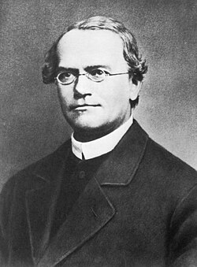

Gregor Johann Mendel (1822 - 1884), một nhà giáo, nhà khoa học tự nhiên người Séc rất đam mê với công tác chọn giống thực vật. Mendel đã may mắn được một giáo sư vật lí, Christian Doppler, dạy cách tiến hành thực nghiệm khoa học cũng như sử dụng toán học để giải thích các hiện tượng tự nhiên và nhà thực vật học Franz Unger khuyến khích tìm nguyên nhân gây ra các biến dị ở thực vật. Vào những năm đầu của thế kỉ XIX, ở châu Âu, nhiêu nhà sinh học, nhà làm vườn và chọn giống động, thực vật tin vào học thuyết di truyền được gọi là thuyết di truyền pha trộn. Theo thuyết này, vật chất di truyền tồn tại dưới dạng chất lỏng như máu nên ở đời con có sự pha trộn giữa vật di truyền của bố và mẹ. Với kinh nghiệm làm vườn và quan sát thực tế trên nhiều đối tượng sinh vật, Mendel nhận thấy thuyết di truyền pha trộn chưa đúng vì nhiều đặc điểm của sinh vật được truyền một cách nguyên vẹn từ thế hệ này sang thế hệ khác mà không hòa trộn với nhau ở đời con. Mong muốn làm sáng tỏ cơ chế di truyền đã thôi thúc Mendel tiến hành nhiều thí nghiệm khác nhau ở các loài như ong mật và đậu hà lan.